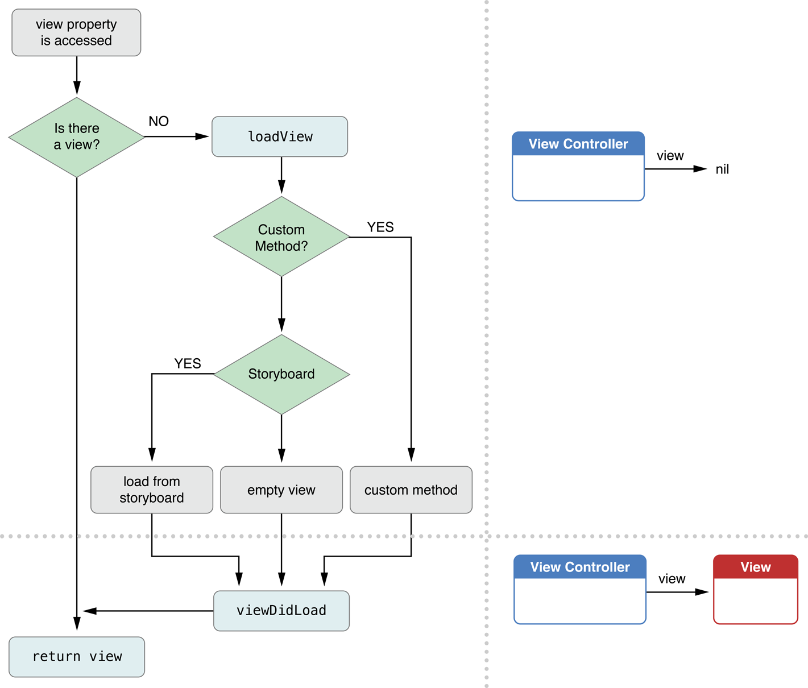
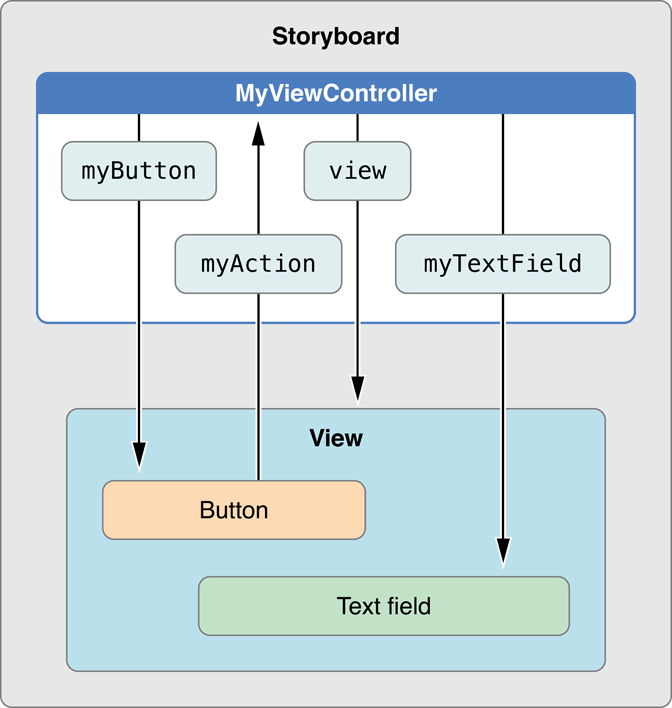
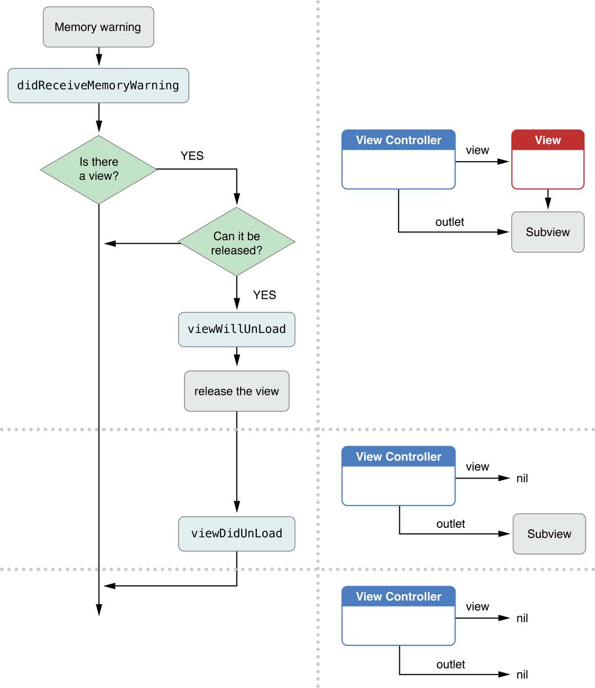

iOS 视图控制器编程指南：视图控制器的资源管理
记录关于学习过的 iOS 文档
视图控制器的资源管理
视图控制器是管理应用程序的资源的必要部分。视图控制器可以将你的应用程序划分为多个部分并只实例化需要的部分。不仅如此，视图控制器自己也管理着不同的资源并在不同时间实例化它们。例如，视图控制器的视图层次结构只有当视图被访问时才实例化；通常，这种情况只会发生在视图在屏幕上显示时。如果多个视图控制器同时被放入导航堆栈中，那么只有最上层的视图控制器内容会显示，这意味着只有它的视图被访问。同样，如果视图控制器不通过导航控制器呈现，那么它不需要实例化它的导航项。通过延迟大多数资源的分配直到它需要，视图控制器可以使用更少的资源。
当应用程序运行时可用内存过低，系统会自动通知所有视图控制器。这个通知会使视图控制器清除缓存和其它对象然后它们可以在以后内存充足时轻松的重新创建。实际的行为会根据应用程序在不同 iOS 版本运行而有所不同，这也会影响你的视图控制器设计。
细心的管理与视图控制器关联的资源是应用程序高效运行的关键。你应该也比较喜欢延迟分配；创建和维持对象是昂贵的，应该延迟分配它们并只在需要时才分配。因为这个原因，你的视图控制器应该分开在整个视图控制器声明周期都需要的对象和只在某些时候需要的对象。当你的视图控制器接收到底内存警告时，如果它不是显示在屏幕上的，应该准备缩减它的内存使用。
初始化视图控制器
当视图控制器首次实例化时，它会创建或加载它的生命周期中需要的对象。它不应该创建它的视图层次结构或与显示内容关联的对象。它应该关注数据对象和实现它的关键行为需要的对象。
初始化视图控制器从故事板加载
当你在故事板中创建视图控制器时，在界面构造器配置的属性会序列化到一个存档中。在视图控制器实例化后，这个存档会加载到内存中并进行处理。使对象属性的设置与界面构造器的属性设置相同。这个存档的加载是通过调用视图控制器的 initWithCoder: 方法。然后，awakeFromNib 方法会被实现了该方法的对象调用。你可以使用这个方法对已实例化的对象执行任何需要的配置步骤。
关于更多 archiving 和 archiving，见 Archives and Serializations Programming Guide。
初始化视图控制器以编程方式
如果视图控制器以编程方式分配它的资源，需要为视图控制器指定创建自定义初始化方法。这个方法应该调用它的父类的 init 方法并执行类特定的初始化任务。
通常情况下，不要写太复杂的初始化方法。而应该实现简单的初始化方法，然后为视图控制器使用者提供属性配置它的行为。
视图控制器实例化它的视图当视图被访问时
每当应用程序的某部分访问视图控制器视图对象而该对象当前不再内存中时，视图控制器会加载视图层次结构到内存中并将它保存到 view 属性中备用。加载周期期间会产生以下步骤：
1.视图控制器调用它的 loadView 方法。loadview 方法的默认实现过程做以下两件事之一：
- 如果视图控制器是与故事板关联，它会从故事板加载视图。
- 如果视图控制器没有与故事板关联，一个空的 UIView 对象会被创建并分配到
view属性。
2.视图控制器调用它的 viewDidLoad 方法，它让你的子类在加载时间 (load-time) 执行额外的任务。
图 4-1 展现可视化的加载周期，包含若干被调用的方法。你的应用程序可以根据需要重写 loadView 和 viewDidLoad 方法，轻松的让视图控制器按照你的想法执行。例如，如果你的应用程序没有使用故事板但你想额外的视图能被添加到视图层次结构中，你可以通过重写 loadView 方法以编程方式初始化这些视图。
图 4-1 加载视图到内存中

从故事板加载视图控制器的视图
大多视图控制器从相关联的故事板中加载它们的视图。使用故事板的优点是它们可以让你以图形化界面布局和配置视图，可以轻松和快速的调整布局。你可以快速迭代不同的版本，细致的打磨应用程序界面。
在界面构造器创建视图
界面构造器是 Xcode 的一部分，提供了直观的方式为视图控制器创建和配置视图。使用界面构造器时，可以使用 inspector 窗口直接操作它们组合视图和控件，拖动它们进入工作空间，定位，调整尺寸，并修改它们的属性。结果会保存到故事板文件中，它保存着你组合的对象集合与你所做的所有自定义相关的信息。
在界面构造器配置视图的显示属性
为了帮助正确布局视图的内容，界面构造器提供了让你指定视图是否拥有导航栏，工具栏或其它可以影响自定义内容位置的对象的控件。如果控制器在故事板中连接到容器控制器，它可以从容器推断这些设置，可以轻松准确的见到它在运行时如何显示。
为你的视图控制器配置 Action 和 Outlets
使用界面构造器时，可以创建界面中的视图和视图控制器之间的连接。
清单 4-1 展示的自定义类 MyViewController 声明的两个自定义 outlets (通过关键字 IBOutlet 定义) 和单个 action 方法 (定义为 IBAction 返回类型)。它们在实现文件的 category 内声明。outlets 保存着在故事板中的按钮和文本字段的引用，action 方法响应按钮的 taps 事件。
清单 4-1 自定义视图控制器的类声明
1 | @interface MyViewController() @property (nonatomic) IBOutlet id myButton; @property (nonatomic) IBOutlet id myTextField; - (IBAction)myAction:(id)sender; @end |
图 4-2 展示你将在 MyViewController 类中创建的对象的连接。
图 4-2 故事板中的连接

当上面配置的 MyViewController 类创建和呈现后，视图控制器的基础架构自动从故事板加载视图并重新配置所有 outlets 或 actions。因此，当视图被呈现给用户时，你的视图控制器的 outlets 和 actions 已经被设置并可以使用。这个能力在运行代码和设计时的资源文件之间的搭建桥梁，这是使故事板如此强大的原因之一。
以编程方式创建视图
如果你准备以编程方式创建视图，替代故事板，你可以通过重写视图控制器的 loadView 方法达成目的。这个方法的实现过程应该做以下的事情：
1.创建根视图对象。
根视图包含所有与视图控制器关联的其它视图，通常为这个视图定义 frame 适应应用程序窗口的尺寸，它应该填充整个屏幕。不过，frame 基于视图控制器如何显示而调整。见 Resizing the View Controller‘s Views。
你可以使用通用 UIView 对象自定义视图，或其它可以伸展填充满屏幕的视图。
2.创建额外的子视图并把它们添加到根视图。
对每个视图，你应该：
a.创建和初始化视图。
b.使用 addSubview: 方法添加视图到父视图。
3.如果你使用自动布局，请为你创建的每个视图分配足够的约束控制视图的位置和尺寸。否则，可以实现 viewWiiLayoutSubviews 和 viewDidLayoutSubviews 方法调整视图层次结构中子视图的 frame。见 Resizing the View Controller‘s Views。
4.把根视图分配到视图控制器的 view 属性。
清单 4-2 展示一个 loadView 方法实现的例子。这个方法创建了一对视图层次结构中的自定义视图并把它们分配到视图控制器。
清单 4-2 以编程方式创建视图
1 | - (void)loadView { CGRect applicationFrame = [[UIScreen mainScreen] applicationFrame]; UIView *contentView = [[UIView alloc] initWithFrame:applicationFrame]; contentView.backgroundColor = [UIColor blackColor]; self.view = contentView; levelView = [[LevelView alloc] initWithFrame:applicationFrame viewController:self]; [self.view addSubview:levelView]; } |
当重写
loadView方法以编程方式创建你的视图控制器时，你不应该调用super。因为这样会启动默认视图加载行为通常只会浪费 CPU 周期。你的loadView实现过程应该只做为视图控制器创建根视图和子视图需要的工作。更多视图加载处理的信息，见 A View Controller Instantiates Its View Hierarchy When Its View is Accessed。
高效管理内存
当涉及视图控制器和内存管理时，这里有两个问题需要考虑：
- 如何高效分配内存
- 何时与如何释放内存
内存分配的一些方面严格由你决定，UIViewControllers 类提供了一些通常与内存管理任务有联系的方法。表格 4-1 列出在你的视图控制器对象中可能分配或释放内存的位置，和每个位置你应该怎么做的信息。
| 任务 | 方法 | 讨论 |
|---|---|---|
| 分配视图控制器需要的关键数据结构 | 初始化方法 | 自定义初始化方法(名字是 init 或其它) 总是负责把你的视图控制器对象放入一个已知的良好状态。包含分配任何所需的数据对象确保正确运行。 |
| 创建视图对象 | loadView | 只有如果你打算以编程方式创建视图时才需要重写 loadView 方法，如果你使用故事板，视图自动从故事板文件加载。 |
| 创建自定义对象 | 自定义属性和方法 | 尽管你可以自由使用其它设计，请考虑使用与 loadView 方法类似的模式。创建保存对象的属性和匹配的方法对它初始化。当属性被读取并且它的值是 nil 时，调用关联的加载方法。 |
| 分配或加载数据显示在视图中 | viewDidLoad | 数据对象通常通过配置视图控制器的属性提供。所有视图控制器想创建额外的对象都应该通过重写 viewDidLoad 方法完成。当这个方法被调用之后，视图对象会确保存在并且是一个已知的良好状态。 |
| 响应低内存通知 | didReceiveMemoryWarning | 使用这个方法释放所有与视图控制器关联的非关键对象。在 iOS 6，你也可以使用这个方法释放对视图对象的引用。 |
| 释放视图控制器需要的关键数据结构 | dealloc | 重写这个方法是执行视图控制器类清理的最后一步。保存在实例变量和属性中的对象会自动释放，你不需要明确的释放它们。 |
iOS 6 和之后的版本，视图控制器在需要时卸载它的视图
视图控制器的默认行为是 view 属性第一次访问时加载它的视图层次结构并一直保持在内存中直到视图控制器处置它们。视图绘制它自己到屏幕上使用的内存可能相当的大，因此，当视图不与窗口关联时系统会自动释放这些昂贵的资源。大部分视图使用的残留内存足够的小，不值得系统自动清除和重新创建视图层次结构。
如果你的应用程序必须用到额外的内存，你可以明确的释放视图层次结构。清单 4-3 重写 didReceiveMemoryWarning 方法完成目的。首先，它调用父类的实现执行需要的默认行为。然后，它清除视图控制器的资源。最后，它测试视图控制器的视图没显示在屏幕上。如果视图与窗口关联，那么它清除所有视图控制器对它的视图和子视图的强引用。如果视图保存着需要被重新创建的数据，那么这个方法的实现过程应该在释放这些视图的引用之前保存数据。
清单 4-3 释放视图控制器的视图不在屏幕上显示
1 | - (void)didReceiveMemoryWarning { [super didReceiveMemoryWarning]; // Add code to clean up any of your own resources that are no longer necessary. if ([self.view window] == nil) { // Add code to preserve data stored in the views that might be // needed later. // Add code to clean up other strong references to the view in // the view hierarchy. self.view = nil; } |
View 属性下次被访问时，视图会如同第一次被访问一样重新加载。
iOS 5 和之前的版本，当内存过低时系统可能会卸载视图
在早期版本的 iOS，当内存过低时系统自动尝试卸载视图控制器的视图。下面的步骤发生在卸载周期期间：
1.应用程序从系统接收到低内存警告。
2.每个视图控制器都调用它的 didReceiveMemoryWarning 方法。如果你重写这个方法，你应该使用它释放你的视图控制器对象不长期需要的内存或对象。你必须在实现过程的某个位置调用 super 确保默认的实现过程运行。在 iOS 5 和之前，默认实现过程会尝试释放视图，在 iOS 6 和之后，默认实现过程会退出 (无用)。
3.如果视图不能安全的释放 (例如，它在屏幕上显示)，默认实现过程会退出。
4.视图控制器调用它的 viewWillUnload 方法。它的子类通常会重写这个方法如果它需要在视图销毁之前保存视图的属性。
5.设置它的 view 属性为 nil。
6.视图控制器调用它的 viewDidUnload 方法。它的子类通常会重写这个方法释放对它拥有的视图的强引用。
图 4-3 可视化的呈现视图控制器的卸载周期。
图 4-3 从内存中卸载视图

iOS 翻译 《View Controller Programming Guide for iOS：Introduction》
iOS 翻译 《View Controller Programming Guide for iOS：View Controller Basics》
iOS 翻译 《View Controller Programming Guide for iOS：Using View Controllers in Your App》
iOS 翻译 《View Controller Programming Guide for iOS：Creating Custom Content View Controllers》
iOS 翻译 《View Controller Programming Guide for iOS：Resource Management in View Controllers》
iOS 翻译 《View Controller Programming Guide for iOS：Responding to Display-Related Notifications》
iOS 翻译 《View Controller Programming Guide for iOS：Resizing the View Controller’s Views》
iOS 翻译 《View Controller Programming Guide for iOS：Using View Controllers in the Responder Chain》
iOS 翻译 《View Controller Programming Guide for iOS：Supporting Multiple Interface Orientations》
iOS 翻译 《View Controller Programming Guide for iOS：Coordinating Efforts Between View Controllers》
iOS 翻译 《View Controller Programming Guide for iOS：Enabling Edit Mode in a View Controller》
iOS 翻译 《View Controller Programming Guide for iOS：Creating Custom Segues》
iOS 翻译 《View Controller Programming Guide for iOS：Creating Custom Container View Controllers》